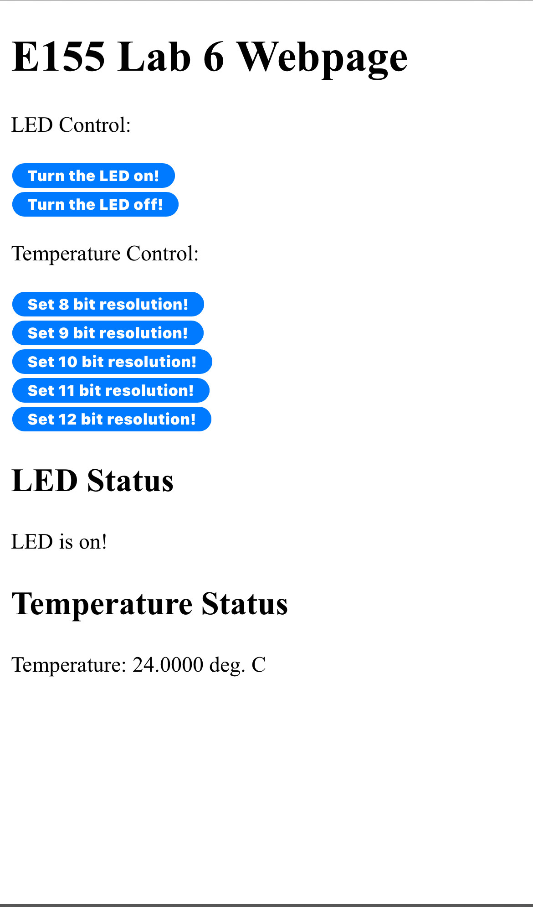
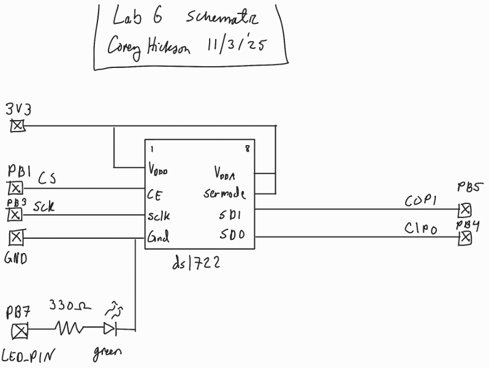
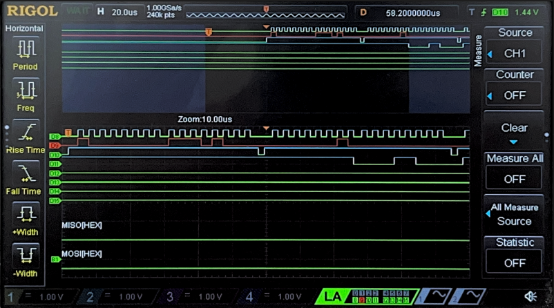
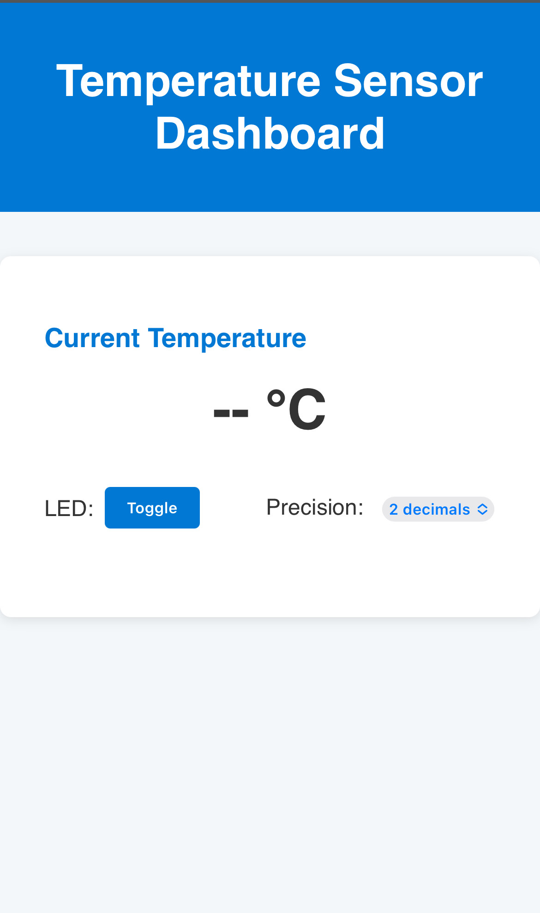

Lab 6: The Internet of Things and Serial Peripheral Interface
Introduction
This report outlines the design of an Internet of Things based temperature sensor and webpage
Design Methodology
To record temperatures to display on the device’s webpage, I used a SPI temperature sensor which is written to for configuration and read from to get the temperature in fixed point format. The DS1722 temperature sensor’s data sheet can be found here
For this, I had to write a custom SPI library in C to configure the SPI registers on the MCU and drive data out and read data back.
Webpage Design
I designed the webpage to have button inputs to configure the number of bits of resolution via an HTTP request in the same way that the starter code turns a LED on and off.

Technical Documentation
The C source code for this lab can by found on my github page
Schematic

SPI Verification
To verify SPI transactions occured properl, I used a logic analyzer to show an SPI read and write between the MCU and temperature sensor

Results and discussion
My design successfully displayed the temperature data from a DS1722 temperature sensor on a webpage with button selected 8 to 12 bit resolution.
This lab took me 10 hours
AI Prototype
I fed google AI mode the two promps, but It refused to produce any HTML code, so I tried Microsoft Copilot and it produced the following code:
HTML Webpage
char* AI_page = "\
<!DOCTYPE html>\
<html lang=\"en\">\
<head>\
<meta charset=\"UTF-8\" />\
<meta name=\"viewport\" content=\"width=device-width, initial-scale=1.0\"/>\
<title>Temperature Sensor Dashboard</title>\
<style>\
body {\
font-family: 'Segoe UI', sans-serif;\
background: #f4f7f9;\
color: #333;\
margin: 0;\
padding: 0;\
}\
header {\
background: #0078d4;\
color: white;\
padding: 1rem;\
text-align: center;\
}\
.container {\
max-width: 600px;\
margin: 2rem auto;\
padding: 2rem;\
background: white;\
border-radius: 8px;\
box-shadow: 0 2px 8px rgba(0,0,0,0.1);\
}\
.section {\
margin-bottom: 2rem;\
}\
.section h2 {\
margin-bottom: 1rem;\
font-size: 1.2rem;\
color: #0078d4;\
}\
.temperature-display {\
font-size: 2.5rem;\
font-weight: bold;\
text-align: center;\
margin: 1rem 0;\
}\
.controls {\
display: flex;\
justify-content: space-between;\
align-items: center;\
}\
.controls label {\
margin-right: 0.5rem;\
}\
.led-toggle {\
display: flex;\
align-items: center;\
}\
button {\
padding: 0.5rem 1rem;\
background: #0078d4;\
color: white;\
border: none;\
border-radius: 4px;\
cursor: pointer;\
}\
button:hover {\
background: #005fa3;\
}\
select {\
padding: 0.4rem;\
}\
</style>\
</head>\
<body>\
<header>\
<h1>Temperature Sensor Dashboard</h1>\
</header>\
<div class=\"container\">\
<div class=\"section\">\
<h2>Current Temperature</h2>\
<div class=\"temperature-display\" id=\"tempValue\">-- °C</div>\
</div>\
<div class=\"section controls\">\
<div class=\"led-toggle\">\
<label for=\"ledSwitch\">LED:</label>\
<button id=\"ledSwitch\">Toggle</button>\
</div>\
<div>\
<label for=\"precisionSelect\">Precision:</label>\
<select id=\"precisionSelect\">\
<option value=\"0\">0 decimal</option>\
<option value=\"1\" selected>1 decimal</option>\
<option value=\"2\">2 decimals</option>\
</select>\
</div>\
</div>\
</div>\
<script>\
let ledState = false;\
let precision = 1;\
function fetchTemperature() {\
// Simulate fetching temperature from a sensor\
const rawTemp = 22.3456 + Math.random(); // Simulated temperature\
const temp = rawTemp.toFixed(precision);\
document.getElementById('tempValue').textContent = `${temp} °C`;\
}\
document.getElementById('ledSwitch').addEventListener('click', () => {\
ledState = !ledState;\
// Replace with actual API call to toggle LED\
alert(`LED turned ${ledState ? 'ON' : 'OFF'}`);\
});\
document.getElementById('precisionSelect').addEventListener('change', (e) => {\
precision = parseInt(e.target.value);\
fetchTemperature();\
});\
// Initial fetch and update every 5 seconds\
fetchTemperature();\
setInterval(fetchTemperature, 5000);\
</script>\
</body>\
</html>";
SPI code
#include "stm32l4xx.h" // CMSIS header for STM32L432KC
#define DS1722_CS_PORT GPIOA
#define DS1722_CS_PIN GPIO_PIN_4
#define DS1722_READ_TEMP_CMD 0x01 // Read temperature command
// Helper macros to control CS pin
#define DS1722_CS_LOW() (DS1722_CS_PORT->BSRR = (uint32_t)DS1722_CS_PIN << 16)
#define DS1722_CS_HIGH() (DS1722_CS_PORT->BSRR = DS1722_CS_PIN)
float DS1722_ReadTemperature(SPI_TypeDef *SPIx) {
uint8_t tx_buf[3] = { DS1722_READ_TEMP_CMD, 0x00, 0x00 };
uint8_t rx_buf[3] = { 0 };
// Pull CS low to start transaction
DS1722_CS_LOW();
// Send command and receive 2 bytes
for (int i = 0; i < 3; i++) {
// Wait until TXE is set
while (!(SPIx->SR & SPI_SR_TXE));
*((__IO uint8_t *)&SPIx->DR) = tx_buf[i];
// Wait until RXNE is set
while (!(SPIx->SR & SPI_SR_RXNE));
rx_buf[i] = *((__IO uint8_t *)&SPIx->DR);
}
// Pull CS high to end transaction
DS1722_CS_HIGH();
// Combine MSB and LSB (12-bit resolution)
int16_t raw_temp = ((int16_t)rx_buf[1] << 8) | rx_buf[2];
float temperature = raw_temp / 256.0f;
return temperature;
}
The HTML code seemed to make a nice webpage. However I did not take the time to integrate it it with the sensing code.
For the SPI C code, it seemed to write reasonable code but I did not get it to work on my board. It appears to have used a few undefined macros and dubious CMSIS function that assume some other files exist with a certain structure.
I think this could have been a good starting point for my code, but having already written my library it seems incompatible.